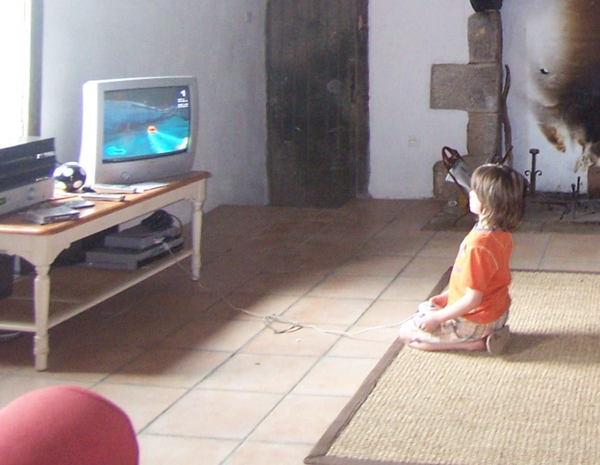

Hello! My name is Rupert and I love games (a little too much tbh). I hold a BSc (Hons) in Game Design from Manchester Metropolitan University. I am currently based in Cambridge.
Ever since the day my dad brought home a PlayStation 1, a whole new world opened for me and my sisters. We spent countless hours exploring fantastical landscapes, solving puzzles, and battling strange creatures. I became obsessed with understanding how these worlds were built, how they made me feel and how I could create something just as captivating. From that moment on, the dream of bringing my own games to life took root. Every new game I play fuels my passion for design, mechanics, and storytelling. Now, I'm on a mission to turn that dream into reality.
This portfolio is a glimpse into my journey as a game designer so far. Here, you'll find the projects I've poured my heart and soul into, showcasing my skills and approach to creating engaging and unique experiences.